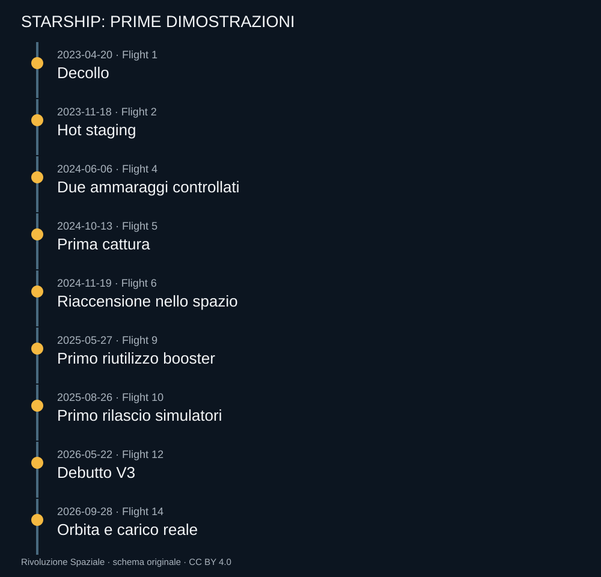

Questo registro conta i voli integrati di Super Heavy e Ship, non i salti di Starhopper o dei prototipi SN. Il taglio è il 10 ottobre 2026. Una riga corrisponde a una missione, ma il risultato rimane articolato per stadio e per carico.
Il conteggio non è un tasso di affidabilità commerciale. Veicoli, configurazioni e obiettivi cambiano durante la serie; alcune missioni cercano deliberatamente condizioni più difficili. Dividere i ritorni riusciti per il numero dei voli senza descrivere queste differenze darebbe un numero semplice e poco significativo.


Come leggere le righe
Un ammaraggio controllato indica che il veicolo ha seguito la frenata e il contatto sull’acqua previsti; non indica che possa volare ancora. Un booster catturato è fisicamente conservato, ma deve essere verificato prima di un nuovo uso. Un satellite reale su traiettoria suborbitale può compiere prove utili senza aggiungersi alla rete in servizio.
La Ship del Flight 14 si inserisce effettivamente in orbita. Nei profili precedenti, il raggiungimento dello spazio e le operazioni durante la fase senza spinta non vengono classificati automaticamente come inserzione orbitale. Il lessico del registro privilegia la traiettoria rispetto alle etichette promozionali.
14 voli visualizzati
| Volo | Data | Configurazione | Traiettoria | Super Heavy | Ship | Carico | Nota e fonte |
|---|---|---|---|---|---|---|---|
| 1 | 2023-04-20 | Prima generazione | Suborbitale previsto, interrotto | Perduto prima della separazione | Perduta con il sistema | Nessun rilascio | Prima partenza del sistema integrato; indagine FAA e correzioni.Fonte del volo |
| 2 | 2023-11-18 | Prima generazione | Suborbitale previsto, interrotto | Perduto dopo la separazione | Perduta durante la salita | Nessun rilascio | Primo hot staging riuscito.Fonte del volo |
| 3 | 2024-03-14 | Prima generazione | Suborbitale | Ritorno non completato | Perduta al rientro | Prova del portello | Trasferimento interno di propellente; riaccensione non eseguita.Fonte del volo |
| 4 | 2024-06-06 | Prima generazione | Suborbitale | Ammaraggio controllato | Ammaraggio controllato | Nessun rilascio | Primi ritorni controllati di entrambi gli stadi.Fonte del volo |
| 5 | 2024-10-13 | Prima generazione | Suborbitale | Catturato alla torre | Ammaraggio controllato | Nessun rilascio | Prima cattura del booster.Fonte del volo |
| 6 | 2024-11-19 | Prima generazione | Suborbitale | Diversione e ammaraggio controllato | Ammaraggio controllato | Nessun rilascio | Prima riaccensione Raptor nello spazio; cattura non autorizzata dai controlli a terra.Fonte del volo |
| 7 | 2025-01-16 | Ship seconda generazione | Suborbitale previsto, interrotto | Catturato alla torre | Perduta durante la salita | Rilascio non raggiunto | Debutto nuova Ship; evento nella parte posteriore.Fonte del volo |
| 8 | 2025-03-06 | Ship seconda generazione | Suborbitale previsto, interrotto | Catturato alla torre | Perduta durante la salita | Rilascio non raggiunto | Nuova perdita Ship; terza cattura del booster.Fonte del volo |
| 9 | 2025-05-27 | Ship seconda generazione | Suborbitale | Riutilizzato, poi perduto nel ritorno | Perduta al rientro | Portello non aperto, rilascio non eseguito | Primo secondo volo di un Super Heavy; problema di assetto Ship.Fonte del volo |
| 10 | 2025-08-26 | Ship seconda generazione | Suborbitale | Ammaraggio controllato | Ammaraggio controllato | 8 simulatori Starlink | Rilascio dimostrativo e riaccensione nello spazio.Fonte del volo |
| 11 | 2025-10-13 | Ship seconda generazione | Suborbitale | Ammaraggio controllato | Ammaraggio controllato | 8 simulatori Starlink | Ultima missione di questa configurazione Ship, booster e Pad 1.Fonte del volo |
| 12 | 2026-05-22 | V3 · Raptor 3 · Pad 2 | Suborbitale | Ammaraggio duro | Prova di rientro e ammaraggio | 20 simulatori e 2 Starlink modificati | Debutto V3; carico non destinato a una costellazione operativa.Fonte del volo |
| 13 | 2026-07-24 | V3 | Suborbitale | Ammaraggio duro | Ammaraggio controllato | 20 V3 reali, suborbitali | Prove radio e laser prima del previsto rientro dei satelliti.Fonte del volo |
| 14 | 2026-09-28 | V3 | Orbitale, dopo fase suborbitale sicura | Ammaraggio e successiva terminazione | Deorbitazione anticipata e ammaraggio nel Pacifico | 26 V3 in orbita | Prima inserzione orbitale; carico contattato, controlli prima del servizio.Fonte del volo |
Scarica il registro CSV Dati JSON
I numeri che non abbiamo trasformato in grafico
Non pubblichiamo una curva del costo per chilogrammo ricavata da ipotesi non documentate. Non trasformiamo capacità teoriche in manifesti di carico realmente trasportato. Non usiamo il numero di prototipi visibili per stimare una cadenza già raggiunta.
Questa scelta non riduce l’ambizione del programma. Consente di distinguere ciò che è stato misurato da ciò che l’architettura potrebbe rendere possibile. Un grafico con dati immaginati renderebbe il racconto più brillante e la storia meno affidabile.
Come aggiornare il registro
Ogni nuovo volo richiede una fonte datata, il confronto fra obiettivi e risultato, la distinzione fra informazioni preliminari e resoconto conclusivo. Se l’indagine successiva modifica la spiegazione di un’anomalia, la nota deve conservare traccia della revisione. Non si riscrive la storia come se la causa definitiva fosse stata nota il giorno del lancio.
Il registro è quindi anche un metodo di lettura. Chi vede un video può trovare la missione, capire quali parti fossero già state dimostrate e quali fossero nuove, poi tornare al capitolo che descrive il passaggio. La cronologia aiuta il ragionamento, non lo sostituisce.
Fonti pubbliche e tracce
- FAA, primo test integrato e chiusura dell’indagine. Primo volo del 20 aprile 2023 e azioni correttive richieste.
- SpaceX, resoconto Flight 2. Resoconto del costruttore; obiettivi di prova distinti dal successo commerciale.
- SpaceX, resoconto Flight 3. Resoconto del costruttore; obiettivi di prova distinti dal successo commerciale.
- SpaceX, resoconto Flight 4. Resoconto del costruttore; obiettivi di prova distinti dal successo commerciale.
- SpaceX, resoconto Flight 5. Resoconto del costruttore; obiettivi di prova distinti dal successo commerciale.
- SpaceX, resoconto Flight 6. Resoconto del costruttore; obiettivi di prova distinti dal successo commerciale.
- SpaceX, resoconto Flight 7. Resoconto del costruttore; obiettivi di prova distinti dal successo commerciale.
- SpaceX, resoconto Flight 8. Resoconto del costruttore; obiettivi di prova distinti dal successo commerciale.
- SpaceX, resoconto Flight 9. Resoconto del costruttore; obiettivi di prova distinti dal successo commerciale.
- SpaceX, resoconto Flight 10. Resoconto del costruttore; obiettivi di prova distinti dal successo commerciale.
- SpaceX, resoconto Flight 11. Resoconto del costruttore; obiettivi di prova distinti dal successo commerciale.
- SpaceX, resoconto Flight 12. Resoconto del costruttore; obiettivi di prova distinti dal successo commerciale.
- SpaceX, resoconto Flight 13. Resoconto del costruttore; obiettivi di prova distinti dal successo commerciale.
- SpaceX, resoconto Flight 14. Resoconto del costruttore; obiettivi di prova distinti dal successo commerciale.